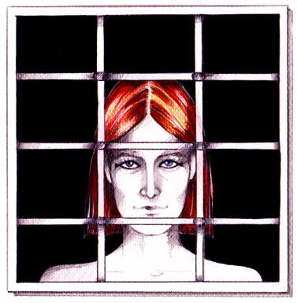

|  |
Ιούνιος 2002. Βρίσκομαι με παρέα σε ένα εξοχικό σπίτι. Ξαφνικά η όσφρησή μας
ευαισθητοποιείται από μια έντονη και ιδιαίτερα φίνα ευωδιά από λιβάνι, που δεν έχει κανείς μας
ξαναμυρίσει στο παρελθόν. Είναι πρώτη φορά που δεν μου έρχεται να χρησιμοποιήσω τη λέξη άρωμα,
γιατί αυτό που μυρίζω το ξεπερνάει κατά πολύ. Για πρώτη φορά στη ζωή μου βιώνω την ουσιαστική
έννοια της λέξης ευωδιά.
Προσπαθούμε να διαπιστώσουμε μήπως προέρχεται από εξωτερική πηγή. Κοιτάζουμε γύρω τα άλλα
μπαλκόνια, αλλά δεν υπάρχει κανείς εκείνη τη στιγμή. Προσπαθούμε να δούμε μήπως η ευωδιά
προέρχεται από την ίδια τη φύση, αλλά δεν υπάρχει τίποτα που να μυρίζει λιβάνι ή να προκαλεί
τέτοια ευωδιά. Νιώθω μια εσωτερική συγκίνηση.
|
|
Σηκώνομαι και μπαίνω μέσα στο σπίτι. Βλέπω έξω από το παράθυρο έναν άνθρωπο,
ή έτσι μου φαίνεται, να με κοιτάζει. Ξέρω μέσα μου ότι δεν είναι ανθρώπινος. Είναι άντρας και
γυναίκα μαζί. Είναι μια πολύ λεπτή και ψιλή φιγούρα με λεπτά χαρακτηριστικά και ολόισια κόκκινα
καρέ μαλλιά. Μου θυμίζει έναν πίνακα του Ροσέτι. Κανονικά θα έπρεπε να τρομάξω, αλλά μέσα μου
γνωρίζω ότι αυτή η μορφή δεν είναι ανθρώπινη κι ότι έρχεται από τον πνευματικό κόσμο και μάλιστα
μου είναι οικεία. Επικοινωνούμε νοερά για δευτερόλεπτα. Στέλνω το μήνυμα «μην είσαι
περίεργος». Με κοιτάζει έντονα, δίχως να βλέπω ακριβώς τα μάτια, αλλά τα νιώθω. Μετά
γυρίζει προφίλ κι εξαφανίζεται όπως στα κινούμενα σκίτσα, εν ριπή οφθαλμού. Μα πώς θα «έφευγε»
διαφορετικά. Αφού είναι Φως, τόσο γρήγορα κινείται.
|
|
|
Όταν περνάει η πρώτη συγκίνηση τρέχω στους φίλους να τους το πω. Έχω μια
αίσθηση για το ποιος ήταν, αλλά δεν θα την εκφράσω. Πολλές φορές στο μέλλον θα αναζητήσω μέσα
μου την αλήθεια για την ταυτότητα αυτού του Όντος.
Εκείνο που αναρωτιέμαι εκ των υστέρων είναι γιατί εμφανίστηκε σ' εμένα και μάλιστα από το
συγκεκριμένο παράθυρο, το οποίο έχει κάγκελα κι έτσι η μορφή έδειχνε σα να είναι φυλακισμένη.
Τότε το μήνυμα μέσα μου σχηματίζεται καθαρά : η «φυλακισμένη» είμαι εγώ και η μορφή μού στέλνει
το μήνυμα «ελευθέρωσε τον εσωτερικό σου άγγελο από τη φυλακή, μη με κρατάς
φυλακισμένο». Και γιατί αυτή τη χρονική στιγμή, γιατί σήμερα;
|
|
Διαπιστώνω ότι αρκετά κράτησα κλειδωμένα μέσα μου αυτά που γνωρίζω κι αυτή τη μέρα παίρνω την
απόφαση να τα εκφράσω. Μια απόφαση, την ορθότητα της οποίας θα επανεξέταζα αρκετές φορές στο
μέλλον. Όμως, το μήνυμα ήταν σαφές : έπρεπε να ελευθερώσω αυτό που είμαι, αυτό που υπάρχει
μέσα μου.
Η φυλακή είναι όλες οι αρνητικές καταστάσεις, ανύπαρκτες στην ουσία, όλο το σκοτάδι, μέσα στο
οποίο είναι φυλακισμένη η ψυχή. Αυτό φαίνεται χαρακτηριστικά όταν όλα εξωτερικά είναι
θαυμάσια, όταν μας προσφέρεται από τους ανθρώπους απλόχερα η αγάπη, κι εμείς δυσπιστούμε,
παίζουμε παιχνίδια εξουσίας και δίχως να το καταλαβαίνουμε, προσπαθούμε να κυριεύσουμε τον
άλλον κι όχι να τον αγαπήσουμε.
Στο μέλλον θα υπάρξουν και πάλι φορές που θα μας επισκεφτεί αυτή η ευωδιά από λιβάνι, πολλές
φορές που θα βιώσουμε τη λέξη ευλάβεια. Η συγκίνηση απ' αυτή την εμπειρία παραμένει κάθε στιγμή
η ίδια, όποτε την ανακαλώ στη μνήμη μου.
|
|
|

{kind=link}